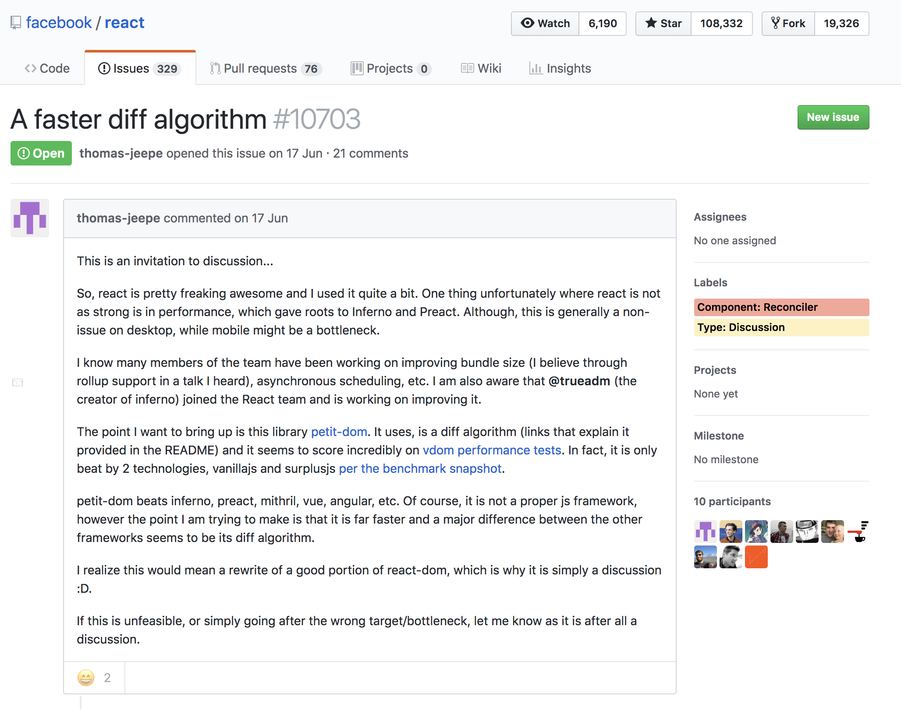

Virtual dom
без гвоздей
VDOM?
<!DOCTYPE html>
<html>
<head>
<meta name="viewport" content="initial-scale=1">
<link href="style.css" rel="stylesheet">
<title>Critical Path< ;/title>
</head>
<body>
<p>
Hello
<span id="first">web performance</span>
students!
</p>
<div><img src="awesome-photo.jpg"></div>
</body>
</html>

- Преобразование
- Разметка
- Создание объектов
- Формирование DOM
- Формирование CSSOM
- Создание модели из DOM и CSSOM
- Форма, расположения объектов
- Создание макета
- Вывод объектов на экран
document.getElementById('first').innerHTML = "Tensor"
- Парсинг HTML
- Удаление детей у id="first""
- Обновление DOM с текстом "Tensor"
- Пересчет CSS для родителя и ребенка
- Обновление слоев
- Обход отображаемого дерева
- Paint!
- Оптимальный разностный алгоритм
- Обновления пачками
- Обновление конкретного поддерева
VDOM!
rx-domh choo reflex miso Hyperapp Ember
Angular React Reagent Maquette AppRun Mithril
Ractive Marko Redom Vue Elm domvm . . .
Поехали
petit-dom
Разностный алгоритм Майерса (1986)
- Разностный алгоритм принимает две структуры на вход
- Алгоритм находит кратчайший скрипт редактирования(КСК), превращающий структуру A в B
- Применение КСК

Оптимизации
Частные случаи
// Старое дерево пустое
if (newStart <= newEnd && oldStart > oldEnd) {
oldCh = oldChildren[oldStart];
appendChildren(parent, children, newStart, newEnd, oldCh && oldCh._node);
return;
}
// Новое дерево пустое
if (oldStart <= oldEnd && newStart > newEnd) {
removeChildren(parent, oldChildren, oldStart, oldEnd);
return;
}
// Одна из двух структур содержит в себе другую
if (oldRem < newRem) {
k = indexOf(
children,
oldChildren
);
if (k >= 0) { // do smth
}
} else if (oldRem > newRem) {
k = indexOf(
oldChildren,
children
);
if (k >= 0) { // do smth
}
}
// Между структурами разница в одну ноду
if (oldStart === oldEnd) {
var node = oldChildren[oldStart]._node;
appendChildren(parent, children, newStart, newEnd, node);
parent.removeChild(node);
unmount(node);
return;
}
if (newStart === newEnd) {
parent.insertBefore(mount(children[newStart]), oldChildren[oldStart]._node);
removeChildren(parent, oldChildren, oldStart, oldEnd);
return;
}
IVI
Свой алгоритм с использованием поиска наибольшей увеличивающейся подпоследовательности
A: [b c d e f] // старая последовательность
B: [c b h f e] // новая последовательность
P: [. . . . .] // (. == -1) массив заполненный -1,
// длина которого равна длинне новой последовательности
// он будет заполнятся позициями значений из старой последовательности
// объект ключи которого
// содержат значения новой последовательности
// а значения это позиция конкретного ключа в ней
B: [c b h f e] // новая последовательность
I: {
c: 0,
b: 1,
h: 2,
f: 3,
e: 4,
}
// с помощью LIS будем искать минимальное количество передвижений
A: [b c d e f]
B: [c b h f e]
P: [1 0 . 4 3] // . == -1
LIS: [1 4] // поиск наибольшей увеличивающейся подпоследовательности

Оптимизации
Частные случаи
// одинаковые ноды в начале
while (
(
aStartVNode!._k === bStartVNode!._k) &&
(((aStartVNode!._f ^ bStartVNode!._f)
& VNodeFlags.Key) === 0
)
) {
_sync(parent, aStartVNode!, bStartVNode!);
// dom smth
if (i) {
break outer;
}
}
// одинаковые ноды в конце
while (
(
aEndVNode!._k === bEndVNode!._k) &&
(((aEndVNode!._f ^ bEndVNode!._f)
& VNodeFlags.Key) === 0
)
) {
_sync(parent, aEndVNode, bEndVNode, context, dirtyContext);
// dom smth
}
}

Reconciliation
Нахождение кратчайшего расстояния
A Survey on Tree Edit Distance and Related Problems
- Zhang and Shasha’s
- Jiang, Wang, and Zhang’s
- Kilpel¨ainen and Mannila’s
O(nˆ3)
Эвристический алгоритм
- Два элемента разных типов создадут разные деревья
- Разработчик может обозначить какие из детей будут стабильными на протяжении нескольких процессов ререндеринга с помощью ключа
O(n)
function shouldHydrateDueToLegacyHeuristic(container) {
const rootElement = getReactRootElementInContainer(container);
return !!(
rootElement &&
rootElement.nodeType === ELEMENT_NODE &&
rootElement.hasAttribute(ROOT_ATTRIBUTE_NAME)
);
}
Элементы разных типов
react-reconciler/src/ReactChildFiber.js
function updateElement(returnFiber: Fiber, current: Fiber | null, element: ReactElement): Fiber {
if (current !== null && current.type === element.type) {
// Move based on index
const existing = useFiber(current, element.props, expirationTime);
existing.ref = coerceRef(returnFiber, current, element);
existing.return = returnFiber;
return existing;
} else {
// Insert
const created = createFiberFromElement(element, returnFiber.mode, expirationTime,
);
created.ref = coerceRef(returnFiber, current, element); created.return = returnFiber;
return created;
}
}
Ключи
react-reconciler/src/ReactChildFiber.js
function mapRemainingChildren(returnFiber: Fiber, currentFirstChild: Fiber,
): Map {// Add the remaining children to a temporary map so that we can find them by
// keys quickly. Implicit (null) keys get added to this set with their index instead.
const existingChildren: Map = new Map();
let existingChild = currentFirstChild;
while (existingChild !== null) {
if (existingChild.key !== null) {
existingChildren.set(existingChild.key, existingChild);
} else {
existingChildren.set(existingChild.index, existingChild);
}
existingChild = existingChild.sibling;
}
return existingChildren;
}
Ключи
react-reconciler/src/ReactChildFiber.js
for (; newIdx < newChildren.length; newIdx++) {
const newFiber = updateFromMap(existingChildren, returnFiber, newIdx, newChildren[newIdx]);
if (newFiber) {
if (newFiber.alternate !== null) {
existingChildren.delete(newFiber.key === null ? newIdx : newFiber.key,);
}
lastPlacedIndex = placeChild(newFiber, lastPlacedIndex, newIdx);
if (previousNewFiber === null) {
resultingFirstChild = newFiber;
} else {
previousNewFiber.sibling = newFiber;
}
previousNewFiber = newFiber;
}
}
Рекурсивный Обход
"By default, when recursing on the children of a DOM node, React just iterates over both lists of children at the same time and generates a mutation whenever there’s a difference"
Рекурсивный Обход
react-reconciler/src/ReactChildFiber.js
function reconcileChildrenIterator(
returnFiber: Fiber,
currentFirstChild: Fiber | null,
newChildrenIterable: Iterable<*>): Fiber | null {
const iteratorFn = getIteratorFn(newChildrenIterable);
const newChildren = iteratorFn.call(newChildrenIterable);
invariant(newChildren != null, 'An iterable object provided no iterator.');
let resultingFirstChild: Fiber | null = null;
let previousNewFiber: Fiber | null = null;
let oldFiber = currentFirstChild;
let lastPlacedIndex = 0;
let newIdx = 0;
let nextOldFiber = null;
let step = newChildren.next();
for (
;
oldFiber !== null && !step.done;
newIdx++, step = newChildren.next()
) {
if (oldFiber.index > newIdx) {
nextOldFiber = oldFiber;
oldFiber = null;
} else {
nextOldFiber = oldFiber.sibling;
}
const newFiber = updateSlot(
returnFiber,
oldFiber,
step.value,
expirationTime,
);
if (newFiber === null) {
// TODO: This breaks on empty slots like null children. That's
// unfortunate because it triggers the slow path all the time. We need
// a better way to communicate whether this was a miss or null,
// boolean, undefined, etc.
if (!oldFiber) {
oldFiber = nextOldFiber;
}
break;
}
if (shouldTrackSideEffects) {
if (oldFiber && newFiber.alternate === null) {
// We matched the slot, but we didn't reuse the existing fiber, so we
// need to delete the existing child.
deleteChild(returnFiber, oldFiber);
}
}
lastPlacedIndex = placeChild(newFiber, lastPlacedIndex, newIdx);
if (previousNewFiber === null) {
// TODO: Move out of the loop. This only happens for the first run.
resultingFirstChild = newFiber;
} else {
// TODO: Defer siblings if we're not at the right index for this slot.
// I.e. if we had null values before, then we want to defer this
// for each null value. However, we also don't want to call updateSlot
// with the previous one.
previousNewFiber.sibling = newFiber;
}
previousNewFiber = newFiber;
oldFiber = nextOldFiber;
}
if (step.done) {
// We've reached the end of the new children. We can delete the rest.
deleteRemainingChildren(returnFiber, oldFiber);
return resultingFirstChild;
}
return resultingFirstChild;
}
You’re Missing the Point of React
https://medium.com/@dan_abramov/"Now that we’re not surprised by virtual DOM anymore and it is being adopted by other frameworks and libraries, we can focus on examining React’s true strengths: composition, unidirectional data flow, freedom from DSLs, explicit mutation and static mental model"
A faster diff algorithm
- How does we often encounter sequences with 1000 elements in a vdom application.
- Is building large hashmaps as costly as we may think? does it have a real impact ?
- The running time of O(ND) is 'not predictable'.
Бенчмарки не отвечают верно на все вопросы
Evan You - Demystifying Frontend Framework Performance